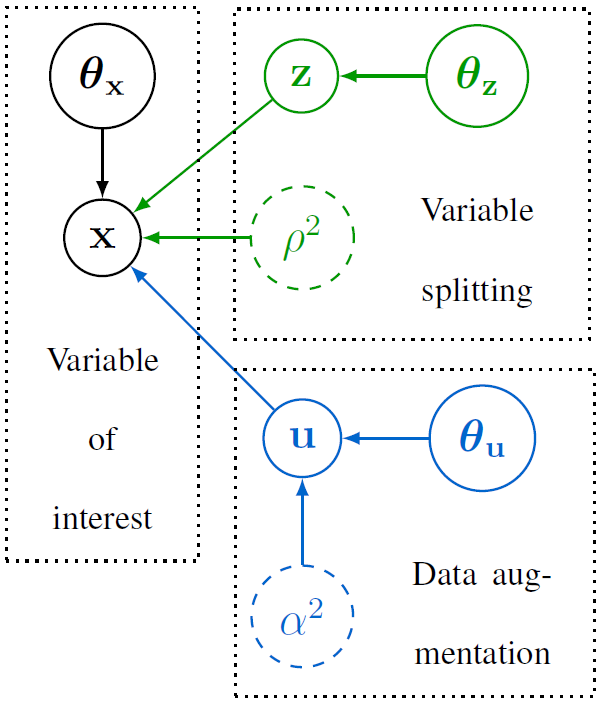

Split-and-augmented Gibbs sampler
Recently, a new class of Markov chain Monte Carlo (MCMC) algorithms took advantage of convex optimization to build efficient and fast sampling schemes from high-dimensional distributions. Variable splitting methods have become classical in optimization to divide difficult problems into simpler ones and have proven their efficiency in solving high-dimensional inference problems encountered in machine learning and signal processing. We derive two new optimization-driven sampling schemes inspired from variable splitting and data augmentation. In particular, the formulation of one of the proposed approaches is closely related to the alternating direction method of multipliers (ADMM) main steps. The proposed framework enables to derive faster and more efficient sampling schemes than the current state-of-the-art methods and can embed the latter. By sampling efficiently the parameter to infer as well as the hyperparameters of the problem, the generated samples can be used to approximate maximum a posteriori (MAP) and minimum mean square error (MMSE) estimators of the parameters to infer. Additionally, the proposed approach brings credibility intervals at a low cost contrary to optimization methods. Simulations on two often-studied signal processing problems illustrate the performance of the two proposed samplers. All results are compared to those obtained by recent state-of-the-art optimization and MCMC algorithms used to solve these problems.

Fig. 1. Directed acyclic graph associated with the usual and proposed hierarchical Bayesian models.
The proposed split-and-augmented Gibbs sampler is detailed in the paper published in IEEE Trans. Signal Processing:
- paper
 .
. - matlab codes
 .
.
Asymptotically exact data augmentation
Actually, the SPA Gibbs sampler targets a probability density derived from an asymptotically exact data augmentation (AXDA). This framework is described here and in the paper published in the Journal of Computational and Graphical Statistics:
- paper .
Application to sparse logistic regression
As an illustration, the proposed split-and-augmented Gibbs sampler has been implemented to conduct sparse Bayesian logistic regression. The results are reported in the paper presented at IEEE Workshop on Machine Learning for Signal Processing (MLSP 2018):
- paper .
- matlab codes .
More results are also available here.
Application to image restoration under Poisson noise and log-concave prior
Another instance of the the proposed split-and-augmented Gibbs sampler has been implemented to conduct Bayesian image restoration under Poisson noise with a log-concave prior (e.g., TV regularization or sparse frame-based synthesis regularization). The results are reported in the paper presented at IEEE Int. Conf. Acoust., Speech, and Signal Processing (ICASSP 2019):
- paper .